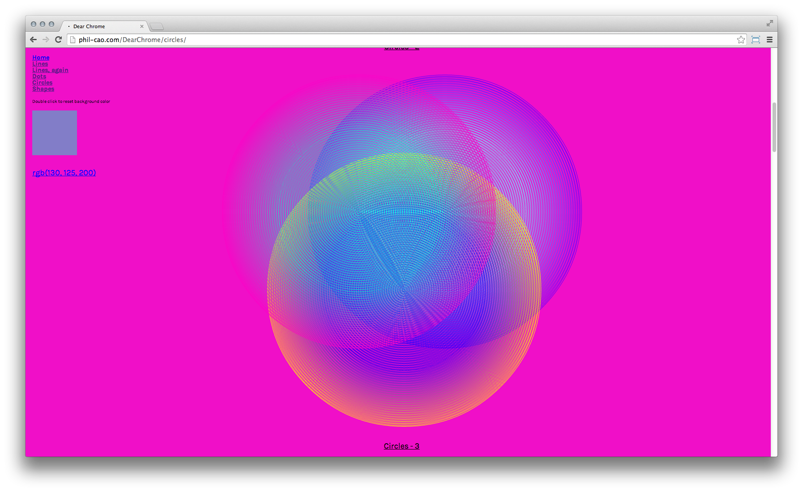

---

layout: page
title: Dear Chrome
author: Philippe Cao
description: A series of exercises exploring color and form as rendered by the Google Chrome browser. <a href="http://www.phil-cao.com/dearchrome">See the project.</a>
category: project
printready: true

---


<!-- This image will go across two pages and full bleed -->
<figure data-imagespread data-fullbleed>

</figure>




<figure data-imagespread data-fullbleed>

</figure>
